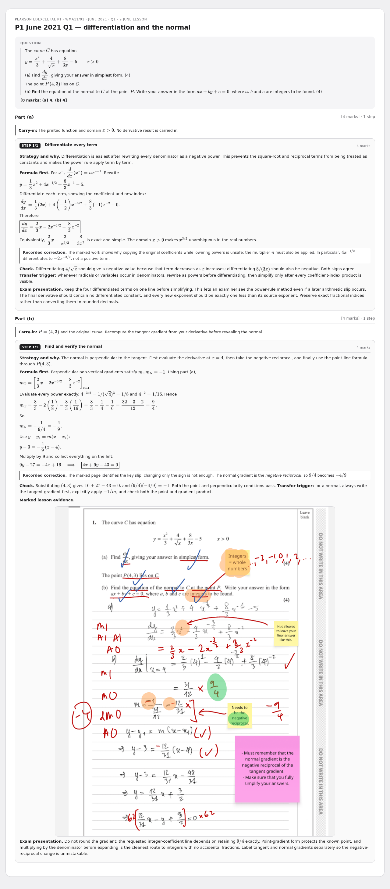
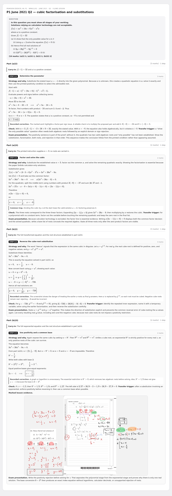
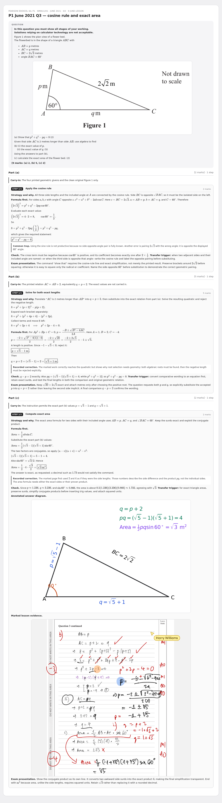
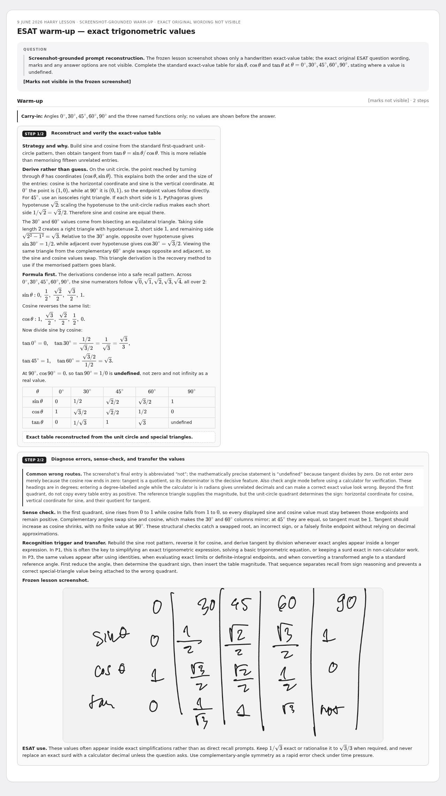

9 June - P1 June 2021 (WMA11/01) Q1-Q3 review + ESAT warm-up
Rebuilt multi-step cards - review preview. Not part of the live deck.
4 cardsWMA11/01Jun 2021P1ESAT
P1 June 2021 Q1 — differentiation and the normal

P1 June 2021 Q2 — cubic factorisation and substitutions

P1 June 2021 Q3 — cosine rule and exact area

ESAT warm-up — exact trigonometric values
